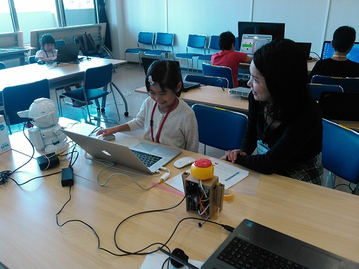
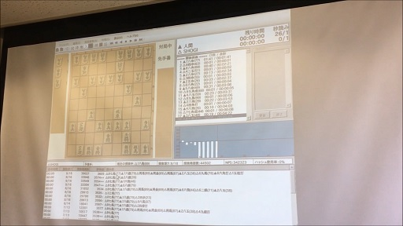
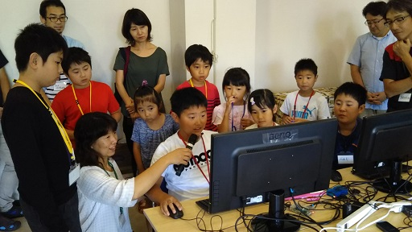
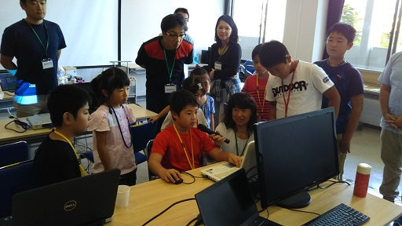
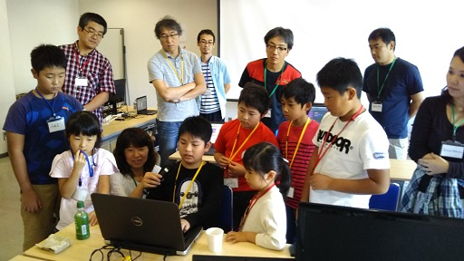
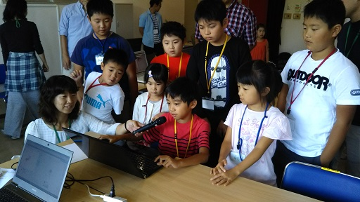
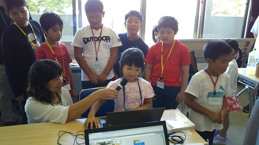
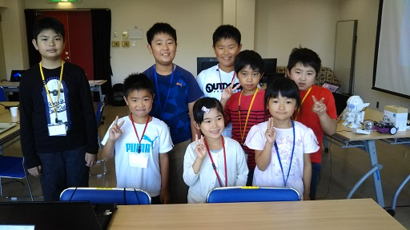

子どものためのプログラミング道場
栃木県 さくら市
栃木県 さくら市
いよいよ第２回のCoderDojo開催！ 会場は前回と同じさくら市氏家公民館です。
うれしいことに、第１回のニンジャ達が全員リピートして来てくれました！ありがとうございます！
Scratchを使いこなして、ゲームを作成したり、ロボットを動かしたりしています。

今回は休憩タイムに、メンターのうがたくさんが開発した、世界大会出場経験のある将棋ソフトを紹介しました。
ニンジャ代表と対戦し、その強さを実感することができました。

発表タイム。今回もみんな張り切って楽しそうに発表してくれました。





第２回もニンジャ達が頑張ってくれたおかげで、無事終了しました。次回は10月１日を予定しています。ぜひ来てくださいね！また、初めての人も気軽に来てくれるとうれしいです！

第２回のダイジェスト動画を作成しました。こちらもぜひご覧ください。